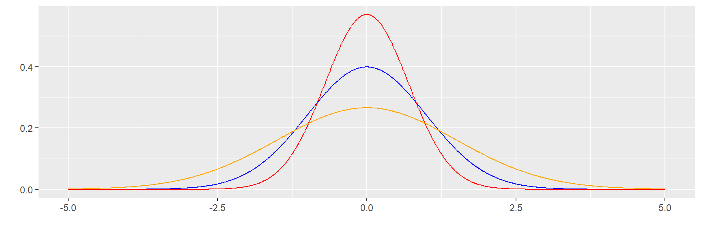

Indicadores de forma
Métodos y Simulación Estadística
Indicadores de forma
Los indicadores de forma son herramientas
estadísticas que permiten añadir elementos adicionales a la
interpretación de los datos. Estos indicadores complementan las medidas
de tendencia central, dispersión y posición, proporcionando información
sobre la simetría y apuntamiento de la
distribución de los datos.
Curtosis
La curtosis es una medida que evalúa la puntiagudez de una distribución en comparación con una distribución normal estándar. Este análisis se realiza a través del coeficiente de curtosis (\(CA\)), que está directamente relacionado con la dispersión de los datos.
Fórmula: \[ CA = \dfrac{1}{s^{4}}\Bigg(\dfrac{1}{n} \sum_{i=1}^{n} (x-\bar{x})^{4} \Bigg) - 3 \]
Donde:
\(s^{4}\): Potencia cuarta de la desviación estándar.
\(\bar{x}\): Media de los datos.
\(n\): Tamaño del conjunto de datos.
Clasificación según el coeficiente de curtosis:
De acuerdo con el valor del coeficiente de curtosis, la distribución se clasifica en tres grupos:
Leptocúrtica (\(CA > 0\)):
La distribución es más puntiaguda que una distribución normal.
Los datos están más concentrados alrededor de la media y presentan colas más largas.
Mesocúrtica (\(CA = 0\)):
La distribución tiene una puntiagudez similar a la de una distribución normal.
Este es el patrón estándar.
Platicúrtica (\(CA < 0\)):
La distribución es menos puntiaguda que una distribución normal.
Los datos están más dispersos, con colas más cortas.
Interpretación
Una curtosis alta (leptocúrtica) indica una mayor concentración de los datos alrededor de la media y valores extremos más frecuentes.
Una curtosis baja (platicúrtica) sugiere que los datos están más dispersos y menos concentrados cerca de la media.
La mesocúrtica es el caso base y corresponde al comportamiento de una distribución normal.
Aplicaciones
Evaluar la forma de la distribución en modelos estadísticos.
Detectar patrones de concentración o dispersión en los datos.
Determinar si los datos cumplen con los supuestos de normalidad en análisis estadísticos.
En la Figura 1.29 se comparan las distintas formas de curtosis utilizando distribuciones normales con diferentes niveles de dispersión, lo que refleja las características de leptocurtosis, mesocurtosis y platicurtosis.

Figura 1.29 Comparación de las formas de curtosis.Ejemplo:
En este ejemplo, se calcula el coeficiente de curtosis para el siguiente conjunto de datos:
\[ 41.67, 42.23, 45.53, 50.82, 52.93, 57.03, 61.13, 62.48, 72.77, 75.58, 76.98, 78.05 \]
Los códigos en R son los siguientes:
# Instalar y cargar la librería necesaria
# install.packages("e1071")
library(e1071)
# Datos
x = c(41.67, 42.23, 45.53, 50.82, 52.93, 57.03, 61.13, 62.48, 72.77, 75.58, 76.98, 78.05)
# Calcular el coeficiente de curtosis
kurtosis(x)
# Instalar y cargar la librería necesaria
# install.packages("e1071")
library(e1071)
# Datos
x = c(41.67, 42.23, 45.53, 50.82, 52.93, 57.03, 61.13, 62.48, 72.77, 75.58, 76.98, 78.05)
# Calcular el coeficiente de curtosis
kurtosis(x)El coeficiente de curtosis obtenido es: - 1.674344
El valor del coeficiente de curtosis es negativo, lo que indica que los datos presentan una forma platicúrtica o aplanada. Esto significa:
Los datos están menos concentrados alrededor de la media en comparación con una distribución normal.
Las colas de la distribución son más cortas y menos pronunciadas.
Esta información puede ser útil para analizar la forma de la distribución y evaluar cómo se dispersan los datos en relación con su centro.
Asimetría o sesgo
El coeficiente de asimetría o sesgo mide qué tanto la forma de la distribución de frecuencias de los datos es simétrica o asimétrica con respecto a la media. Este indicador es clave para determinar cómo se distribuyen los datos alrededor del valor central.
Fórmula
\[ CA = \dfrac{1}{s^{3}} \Bigg( \dfrac{1}{n} \sum_{i=1}^{n} (x_{i}-\bar{x})^{3} \Bigg) \]
Donde:
\(s^{3}\): Cubo de la desviación estándar.
\(\bar{x}\): Media del conjunto de datos.
\(n\): Tamaño de la muestra.
Clasificación según el valor del coeficiente
Simétrica:
Si el valor del indicador es \(0\):
\[ \bar{x} = Me \]
Los datos están distribuidos de manera uniforme alrededor de la media.Asimétrica a la izquierda:
Si el valor del indicador es negativo (\(CA < 0\)):
\[ \bar{x} < Me \]
Indica que la distribución tiene una cola más larga hacia la izquierda.Asimétrica a la derecha:
Si el valor del indicador es positivo (\(CA > 0\)):
\[ \bar{x} > Me \]
Indica que la distribución tiene una cola más larga hacia la derecha.
Importancia
El coeficiente de asimetría es útil para:
Evaluar la forma de la distribución en relación con su simetría.
Identificar sesgos en los datos que puedan influir en análisis estadísticos.
Determinar si los datos cumplen los supuestos de simetría en algunos modelos estadísticos.
Interpretación
En la Figura 1.30 se presentan curvas de densidad que ilustran los diferentes tipos de asimetría: simétrica, asimétrica a la izquierda y asimétrica a la derecha. Estas curvas ayudan a visualizar cómo se distribuyen los datos respecto a la media.
Asimetría negativa : Una prueba con resultados asimétricos a la izquierda o negativa, indica que pocos obtuvieron resultados bajos y que muchos alcanzaron resultados altos, pudiendo indicar que la prueba era relativamente fácil (poco con poco y mucho con mucho).
Simétrica : En este caso una prueba con resultados simétricos indica que los puntajes se ubicaron al rededor de la media y que unos pocos sacaron puntaje bajo y que los que presentaron resultados altos corresponden a un pequeño grupo. Por lo regular estos son los resultados de pruebas estandarizada como pueden ser las pruebas de estado (poco con poco y poco con mucho).
Asimetría positiva : Los resultados a pruebas con asimetría a la derecha o positiva, presentan resultados acumulados a la izquierda, es decir que muchos obtuvieron resultados bajos y unos pocos resultados altos. Esto haría pensar que la prueba fue exigente (mucho con poco y poco con mucho).
 Figura 1.30 Comparación de las formas de sesgo o
asimetrías.
Figura 1.30 Comparación de las formas de sesgo o
asimetrías.
Ejemplo:
En este ejemplo, se calcula el coeficiente de asimetría para el siguiente conjunto de datos:
\[ 41.67, 42.23, 45.53, 50.82, 52.93, 57.03, 61.13, 62.48, 72.77, 75.58, 76.98, 78.05 \]
Los códigos en R son los siguientes:
# Instalar y cargar la librería necesaria
# install.packages("e1071")
library(e1071)
# Datos
x = c(41.67, 42.23, 45.53, 50.82, 52.93, 57.03, 61.13, 62.48, 72.77, 75.58, 76.98, 78.05)
# Calcular el coeficiente de asimetría
skewness(x)
# Instalar y cargar la librería necesaria
# install.packages("e1071")
library(e1071)
# Datos
x = c(41.67, 42.23, 45.53, 50.82, 52.93, 57.03, 61.13, 62.48, 72.77, 75.58, 76.98, 78.05)
# Calcular el coeficiente de asimetría
skewness(x)El resultado del coeficiente de asimetría calculado es: 0.07062934
El valor del coeficiente de asimetría es cercano a 0, lo que indica que la distribución de los datos es aproximadamente simétrica.
Esto significa que los datos están distribuidos de manera uniforme alrededor de la media, con colas de longitud similar en ambos lados.
En este caso, no se observa un sesgo significativo hacia la izquierda ni hacia la derecha, lo que refleja una distribución equilibrada.